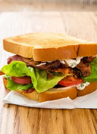

Ultimate BLT
Bacon Lettuce Tomato
Ingredients
- 16 slices bacon
- 3 vine-ripened tomatoes
- 2 tablespoons extra-virgin olive oil
- 1 tablespoon red wine vinegar
- Salt and pepper
- 1/2 cup mayonnaise
- 1/4 cup chopped fresh basil
- 1 1/2 teaspoons lemon juice
- Pinch cayene pepper
- 8 slices potato sandwich bread
- 1 head Bibb lettuce, leaves separated
Steps
- Adjust oven rack 6 inches from broiler element and heat oven to 400 degrees. Arrange bacon in single layer on aluminum foil–lined rimmed baking sheet, overlapping slightly as needed to fit. Bake until bacon is deeply browned and crispy, 25 to 30 minutes, rotating sheet halfway through baking. Transfer bacon to paper towel–lined plate; discard bacon fat and foil. Heat broiler.
- Meanwhile, core tomatoes and cut into 16 (1/4-inch-thick) slices (you may have some left over). Whisk oil, vinegar, 1/4 teaspoon salt, and 1/4 teaspoon pepper together in shallow dish. Add tomatoes; turn gently to coat with vinaigrette. Whisk mayonnaise, basil, lemon juice, and cayenne together in bowl.
- Arrange bread on now-empty sheet. Broil until lightly browned on 1 side only, 1 to 2 minutes.
- Transfer bread, toasted side down, to cutting board. Spread basil mayonnaise evenly on untoasted sides of bread (use all of it). Break bacon slices in half. Shingle 4 bacon halves on each of 4 bread slices, followed by 2 lettuce leaves, 4 tomato slices, 2 more lettuce leaves, and 4 more bacon halves. Top each sandwich with 1 of 4 remaining bread slices, mayonnaise side down. Cut sandwiches in half, corner to corner. Serve.